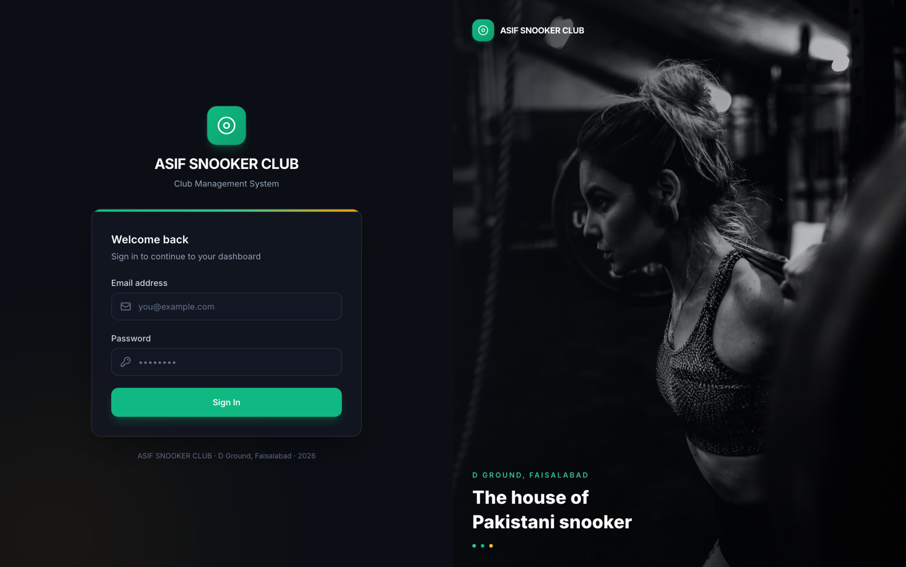
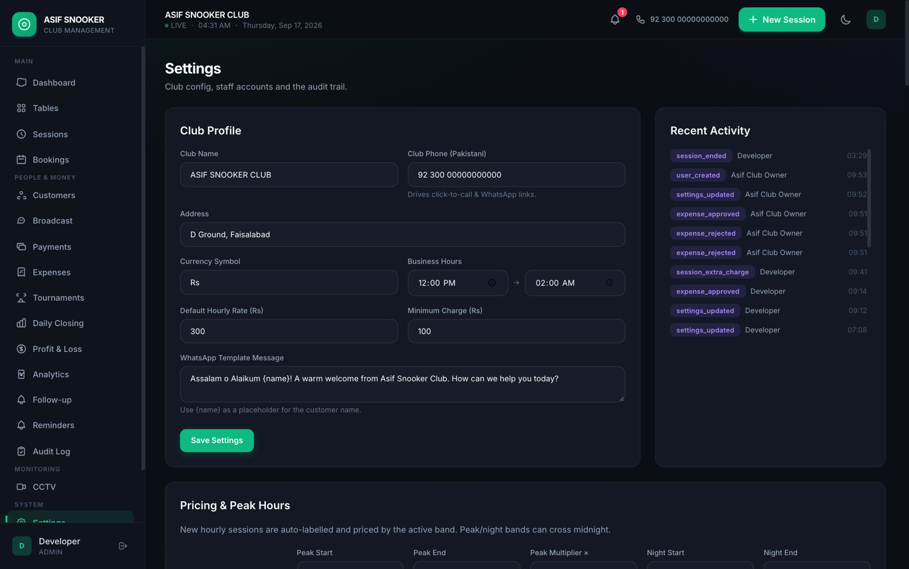
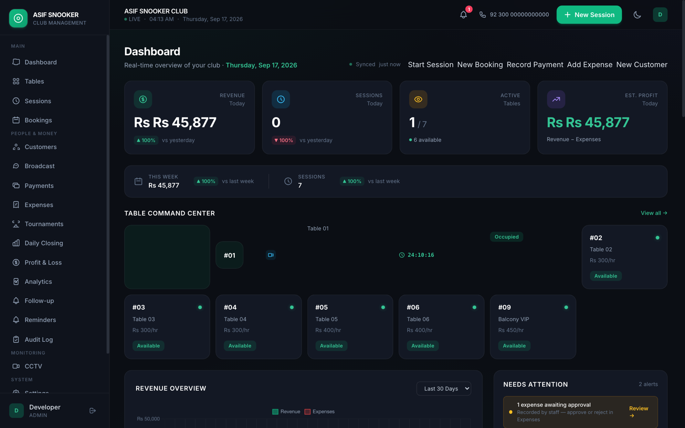

A S I F S N O O K E R C L U B • D - G R O U N D , F A I S A L A B A D
CRM Manager
Mukammal Roman Urdu Guide
Har Function ki Tafseel • Har Sawal ka Jawab • Business Faide
Club ke Malik, Manager aur Counter Staff ke liye
Is guide me club chalane ka poora hisaab — table, customer, booking, paisa,
kharcha, report aur control — sab kuch aasan Roman Urdu me samjhaya gaya hai.
Version 1.0 • 2026
Is Guide Me Kya Kya Hai
1. CRM Kya Hai? (Aasan Alfaz Me)
2. Ye Kyun Zaroori Hai? — 10 Sawal Jo Har Owner Se Poochhein
3. Tamam Functions — Ek Ek Feature Ki Tafseel (asli screenshots ke saath)
4. Har Sawal ka Jawab — Mukammal FAQ (35+ sawal)
5. Business Ko Kaise Faida Hoga? (hisaab ke saath)
6. Setup aur Training Plan
7. Nateeja aur Rabta
Kaise parhein: Agar aap club ke malik hain to Section 2 (sawal) aur Section 4 (FAQ) parhein —
inhi me asal faida chhupa hai. Agar aap counter staff hain to Section 3 (functions) parhein — rozana yehi use hoga.
1. CRM Kya Hai? (Aasan Alfaz Me)
CRM ka matlab hai “Club ka poora hisaab ek jagah”. Pehle club ka record kaghaz par, ya counter wale ki yaad me,
ya mobile ke notes me hota tha. Is CRM me sab kuch ek screen par aa jata hai:
Table Kaunsi table chal rahi hai, kis customer ke naam, kitne minute se — sab live nazar aata hai.
Time aur Bill Timer khud chalta hai, bill khud banta hai. Manually ghadi dekhne ki zaroorat nahi.
Paisa Kitna aya, kitna baqi (outstanding), kaun sa payment kab hua — sab record.
Customer Kis ne kitna khela, kab aya, kaun regular hai, kaun gayab ho gaya.
Booking Pehle se table book, advance payment, aur customer khud portal se book kar sakta hai.
Kharcha aur Report Roz ka kharcha, mahine ka profit-loss, aur har cheez ki report.
Sab se bara faida: Control
Club chalane me asal masla paisa nahi hota — asal masla “pata na hona” hota hai. Aaj kitna bana? Kis table ne
kitna diya? Kis ne udhaar liya? Kis shift me kam aya? CRM in sab ka jawab 10 second me de deta hai — chahe aap ghar par hon.
2. Ye Kyun Zaroori Hai? — 10 Sawal Jo Har Owner Se Poochhein
Tarika ye hai: CRM bechnay se pehle ye 10 sawal poochhein. Malik khud apni problem bayan karega — phir CRM us problem
ka jawab ban jata hai. Har sawal ke saath likha hai ke andar kaunsi problem chhupi hai, aur CRM uska kya jawab deta hai.
Group A — Paisa kahan leak hota hai
Sawal 1: “Bhai, kal club ki exact total earning kitni thi — 10 second me bata sakte ho?” Chhupi problem: Hisaab yaad par ya kaghaz par hai; exact number foran nahi milta.
CRM ka jawab: Dashboard khulte hi aaj/kal ki earning, table income, outstanding aur kharcha ek screen par — 1 second me.
Sawal 2: “Kisi customer ne kam payment ki ya baad me deni ho — uska record kahan hota hai?” Chhupi problem: Udhaar/outstanding ka koi pakka record nahi.
CRM ka jawab: Har session me poora, aadha (partial) ya baad ka payment record hota hai. Outstanding dashboard aur report me alag nazar aata hai.
Sawal 3: “Kabhi aisa hua ke customer ne kaha ‘maine de diya tha’ aur aapko confirm karna mushkil ho gaya?” Chhupi problem: Cash aur record match karne ka koi tareeqa nahi.
CRM ka jawab: Har payment ka receipt + audit log. Kis ne kis waqt kitna payment enter kiya — sab record.
Group B — Table management
Sawal 4: “Abhi 6 tables chal rahi hon — ek nazar me pata hai kaunsi table kis ke naam, kitne minute se?” Chhupi problem: Tables ka live hisaab sirf counter wale ke dimagh me hai.
CRM ka jawab: Tables ka live board — har table par customer ka naam, chalne ka waqt aur chalti hui amount, munh se live.
Sawal 5: “Customer 7:20 pe aya aur 8:55 pe gaya — billing manually calculate hoti hai?” Chhupi problem: Manual timing me ghalti aur jhagra.
CRM ka jawab: Timer khud, rate khud, peak/night rate khud. Bill exactly banta hai — koi hisaab ki ghalti nahi.
Sawal 6: “Peak time pe ek saath 3–4 customers aa jayein — record karna easy rehta hai?” Chhupi problem: Bheed me entry chhoot jati hai, ya ghalat ho jati hai.
CRM ka jawab: Ek click me session start/end. Ek table par multiple sessions, aur ek hi screen se sab manage.
Group C — Customer retention (regular customers)
Sawal 7: “Aapke 20–30 regular customers ke naam aur unka pattern yaad rehta hai?” Chhupi problem: Customer record sirf yaad par mabni.
CRM ka jawab: Customer list — kis ne kab kitna khela, kitna kharch kiya, kaun top customer hai.
Sawal 8: “Agar Ahmed 15 din se na aya to pata chalega?” Chhupi problem: Gayab hone wale customers ka pata nahi chalta — business chupke kam hota rehta hai.
CRM ka jawab: Follow-up report khud batati hai kaun customer 15/30 din se nahi aya — message bhej kar wapas bulaya ja sakta hai.
Group D — Owner ka control aur staff accountability
Sawal 9: “Agar aap club pe na hon to ghar se dekh sakte ho kitna business hua aur kitna outstanding hai?” Chhupi problem: Owner physically mojood na ho to hisaab ka control chala jata hai.
CRM ka jawab: Mobile/PC browser se kahin se bhi dashboard aur reports — live nazar aata hai.
Sawal 10: “Shift end pe cash aur tables ka hisaab automatically match hota hai?” Chhupi problem: Shift ka hisaab match karna mushkil; ghalti ya gadbad pakar me nahi aati.
CRM ka jawab: Har entry par audit log, har user ka apna login, discount/adjust ki permission — sab ka hisaab saf nazar aata hai.
Sab se strong closing sawal: “Agar ek simple system ho jisme table khud start ho, customer select ho, time
khud calculate ho, bill khud bane, payment record ho, aur aap mobile se dekh sako ke aaj kitna business hua — kya yeh aapke
kaam ko genuinely aasan karega?”
Phir poochhein: “Isme sab se useful cheez aapko kaunsi lagegi?” — is se malik khud us cheez me dilchaspi le lega.
3. Tamam Functions — Ek Ek Feature Ki Tafseel
Neeche har module ka kaam, screenshot, aur business faida diya gaya hai. Yehi poora system counter par rozana use hota hai.
3.1 Login aur Roles (Hifazat)

Login screen — har staff ka apna account.
Har banda apne email/password se login karta hai. Malik ka role sab kuch dekh sakta hai; counter staff sirf rozana ka kaam.
Galat password par system user ko foran rokta hai (throttling) aur CSRF security har form par lagi hoti hai.
Faida: Koi bhi banda chupke aapke naam se entry nahi kar sakta. Har kaam pata chalta hai kis ne kiya.

Settings — roles aur permissions ek jagah.
3.2 Dashboard (Aaj ka Business ek Nazar Me)

Dashboard — aaj ki earning, chalti tables, outstanding aur kharcha.
Running table par: winner vs loser ke naam, client ka naam, shuru/expected end ka waqt, aur chalta hua amount
Amount khud update hota hai (timer wala rate ya fixed amount jo aap ne set kiya)
Har card par payment status: Paid, Partial, ya Udhaar
Har table ke saath camera ki live jhalak (thumbnail) — signal na ho to “No signal” likha aata hai
Live updates (SSE) — refresh ki zaroorat nahi
Faida: Counter par bheed ho ya na ho — har table ka hisaab, khelne wale ke naam, aur camera sab nazar me rehta hai. Koi table bhoolti nahi aur koi jhagra nahi.
3.4 Booking (Aane se Pehle Table Reserved)
Bookings list — kis waqt, kis customer ki booking, player aur charge.
Backup & Restore: poora data ek click me backup, zaroorat par wapas
Faida: Rates aap control karte hain, staff sirf ijazat wala kaam, aur data ka backup — sab kuch mehfooz.
4. Har Sawal ka Jawab — Mukammal FAQ
Owner, manager ya staff jo bhi sawal poochhe — yahan uska jawab maujood hai. Yehi section sab se zyada kaam aata hai.
1. Ye CRM asal me kya karta hai?
Club ka poora hisaab ek jagah: table, time, bill, payment, customer, booking, kharcha aur report. Aap 10 second me
bata sakte hain ke aaj kitna bana, kaunsi table chal rahi hai aur kitna paisa baqi hai.
2. Mujhe computer nahi aata — main chala paunga?
Bilkul. Sirf click karna hai: customer chunein, “Start” dabayein, kaam khatam hone par “End” aur payment. Steps screen
par likhe hote hain. Ek ghante ki training aur Urdu guide kaafi hai.
3. Meri English kamzor hai, ye samajh aa jayega?
Haan. Poora system aasan Roman Urdu/Arabic Urdu me hai, bara font aur saaf screen. Technical English sirf andar chal rahi hai — aapko dikhti nahi.
4. Iske liye internet chahiye?
Nahi. Ye aapke club ke network (local computer/server) par chalta hai. Internet optional hai — sirf portal/broadcast jaise
kaam ke liye. Bijli/PC hone par system chalta rehta hai.
5. Kya ye mehnga hai? Fida kitna hai?
Kharcha sirf ek dafa setup + chhota maintenance hai. Agar sirf 5% leakage (timing miss, bhoola hua udhaar, chori) band ho jaye
to mahine ke andar cost recover ho jati hai. (Section 5 me hisaab diya gaya hai.)
6. Mera purana record system me aa jayega?
Haan. Customers ki list CSV/Excel se import ho jati hai. Purane sessions/kharchay bhi daale ja sakte hain, ya naye se shuru kar sakte hain.
7. Mera data safe hai? Koi machine kharab ho jaye to?
Ek click me poora backup banta hai, aur restore bhi. Backup file aap PC, USB ya cloud par rakh sakte hain. Data aapka hai — aapke control me.
8. Staff chori ya gadbad kare to pata chalega?
Haan. Har staff ka apna login hai aur Audit Log har kaam ka record rakhta hai — kis ne session start kiya, discount diya,
payment liya ya miss kiya. Shak ki surat me record aur CCTV dono se confirm hota hai.
9. Kya staff mera poora data dekh ya badal sakta hai?
Nahi. Roles aur permissions set hote hain. Counter staff sirf rozana ka kaam kar sakta hai; rates, profit-loss, users aur
backup sirf malik ke paas hote hain.
10. Bijli chali jaye to kya hoga?
UPS/backup par PC chalta rahega. Agar band bhi ho jaye, jab wapas chalu ho — chalti hui table ka waqt system gaadhta hai,
is liye koi session zaya nahi hota.
11. Mobile par chalega? Ghar se dekh sakta hoon?
Haan. Ye browser par chalta hai — mobile, tablet ya laptop se. Club ke network se jude hone par aap ghar baithe live business dekh sakte hain.
12. Kaun kaun use kar sakta hai?
Malik (sab kuch), manager, counter staff aur customer (portal). Har role ka apna hissa — taake hifazat aur asani dono rahe.
13. Kitni tables support hain?
Jitni marzi. Table add karte jaayein — system rukta nahi. 1 table ho ya 20, sab chalega.
14. Peak aur night rate set ho sakte hain?
Haan. Normal per-hour rate, peak hours ka rate aur night rate — sab settings me set hote hain. Bill khud us hisaab se banta hai.
15. Customer ko SMS/WhatsApp yaad dehani ja sakti hai?
Haan. Broadcast se sab customers ko message, follow-up report se gayab customers ko wapas bulane ka message, aur booking reminder bhi.
16. Customer khud booking kar sakta hai?
Haan — Customer Portal se. Customer phone/PIN se login karke apni table khud book karta hai. Counter par rush kam ho jata hai.
17. Tournaments manage honge?
Haan. Tournament bana kar players register karein, system auto bracket bana dega, aur match ke scores record honge — winner tak.
18. Report Excel/print me mil sakti hai?
Haan. Daily, sessions, payments, expenses, customers aur bookings ki reports CSV export aur print ho sakti hain. Invoice/receipt bhi.
19. Kharcha kaun approve karega?
Aap. Kharcha pehle “pending” hota hai, malik approve karta hai. Pending kharchay dashboard par nazar aate hain — kuch chhupta nahi.
20. Discount ka kya control hai?
Discount sirf ijazat wala de sakta hai, aur har discount audit log me record hota hai — kis ne, kab, kitna. Is se chupke discount dena mushkil hota hai.
21. Cash aur table income match na kare to pata chalega?
Haan. Daily report me table income, charges, discount aur payments alag alag dikhte hain. Farq foran nazar aata hai — aur audit log se wajah bhi.
22. Sab se zyada kharch karne wala customer kaun hai?
Customers page aur analytics batate hain. Aap top customers ko khaas offer/bonus de sakte hain — wohi aapki asal income hain.
23. Kaise pata chalega kaun customer gayab ho gaya?
Follow-up report khud dikhati hai kaun 15/30 din se nahi aya. Ek message bhejein — bina kharche wapas aa sakta hai.
24. Peak time kaunsa hai — pata chalega?
Haan. Analytics hours aur days ka pattern dikhati hai. Peak time par zyada staff aur night rate se zyada kamai ho sakti hai.
25. Har table ka alag hisaab chahiye — milega?
Haan. Analytics aur daily report table ke hisaab se income dikhati hain — kaunsi table sab se zyada kamai de rahi hai.
26. Kitne log ek saath kaam kar sakte hain?
Ek waqt me kai log apne apne login se kaam kar sakte hain; system ne sahi record rakhta hai kis ne kya kiya.
27. Purana data ghalti se delete ho jaye to?
Backup se wapas aa jata hai. Deletes bhi audit log me record hoti hain, aur malik backup har waqt rakh sakta hai.
28. Setup me kitna waqt lagega?
Aik din — PC par install, rates aur tables set, aur staff ko brief training. Uske baad rozana kaam foran shuru.
29. Training kitni chahiye?
Counter staff ke liye taqreeban 1 ghanta kaafi hai (login, table start/end, payment, booking). Malik ke liye reports ka 30 minute.
30. Agar staff chhor kar chala jaye?
Koi masla nahi — data system me rehta hai, naye banda ko 1 ghante me training. Record uske saath nahi jata.
31. Agar system band ho jaye / hang ho jaye?
Server ek dafa set ho kar chalta rehta hai; rozana backup. Zaroorat par sirf PC restart — chalti table ka waqt mehfooz rehta hai.
32. Kya ye mera personal control cheen lega?
Ulta — ye aapka control barhata hai. Aap har cheez ka record dekh sakte hain aur rules set kar sakte hain; staff sirf apna kaam.
33. CCTV zaroori hai?
Zaroori nahi, magar bohat faidamand — system ke andar camera feed dekh sakte hain, aur hisaab ke saath video confirm kar sakte hain.
34. Kya ye sirf baray club ke liye hai?
Nahi. Chhote club ke liye bhi utna hi mufeed — 1-2 tables se le kar 20 tables tak. Jitna chhota club, utna zyada faida (kam log, zyada leakage ka khatra).
35. Sab se pehla step kya hoga?
Aik demo — aapke club jaise set-up par 10 minute ka. Phir install, rates set, training. Bas.
Udhaar bhoolna khatam: outstanding har waqt record me.
Chori mushkil: har entry audit log me, har banda apne login se.
Waqt ki bachat
Hisaab kitab aur register ka kaam aadha ya kam ho jata hai.
Bheed me bhi foran entry — customers wait nahi karte.
Din khatam par report foran taiyar.
Customer retention (zyada kamai)
Regular customers pehchane jate hain.
Gayab hone wale customers ko wapas bulaya jata hai.
Top customers ko khaas offer/bonus.
Owner ka control (chahe ghar par hon)
Live dashboard mobile/PC se.
Mahine ka asal profit-loss.
Staff/shift ka poora hisaab.
Aik simple hisaab (misal)
6Tables
Rs 300Per hour (misal)
6 ghanteRozana average
Misal: 6 tables × Rs 300 × 6 ghante = Rs 10,800 rozana → taqreeban Rs 3.24 lakh mahina.
Agar sirf 5% leakage (timing miss + bhoola hua udhaar + choti choti ghalti) band ho jaye, to taqreeban
Rs 16,000 mahina bach jata hai. Sirf yehi bachat system ki cost nikal deti hai — retention se hone wala faida iske ilawa.
Note: Ye sirf misal hai — asal number aapke club ke tables, rate aur hours ke hisaab se honge.
Ek dafa apne club ke number daal kar dekhein — farq saaf nazar aa jayega.
6. Setup aur Training Plan
Step
Kaam
Waqt
1
Demo — aapke club jaise set-up par live dikhana
10 minute
2
Install — PC/server par system lagana
1 din
3
Setting — tables, rates, peak/night rate, users
1 ghanta
4
Purana data (customers) import (agar chahiye)
1 ghanta
5
Counter staff training — start/end, payment, booking
1 ghanta
6
Malik training — dashboard, reports, backup
30 minute
Rollout tip: Pehle 2–3 din dono tareeqe (system + kaghaz) chalein, taake staff comfortable ho.
Uske baad sirf system — aur poora control aapke paas.
7. Nateeja aur Rabta
Ye CRM sirf software nahi — ye aapke club ko ek system bana deta hai. Paisa, table, customer, kharcha aur staff —
sab ka hisaab ek jagah, har waqt. Isse:
Aapka paisa bachta hai (leakage khatam).
Aapka waqt bachta hai (hisaab khud).
Aapke customer wapas aate hain (retention).
Aapka control barhta hai (ghar se live).
Aapka staff imandar rehta hai (audit).
Yaad rakhein: pehle sawal poochhein (Section 2), phir demo dein. Kabhi problem khud create na karein aur pressure na daalein —
sirf wohi problem dikhayein jo customer ke paas pehle se mojood hai. Yehi asal aur imandar tareeqa hai.